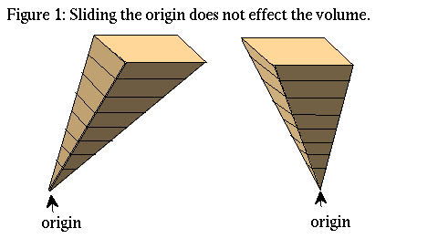
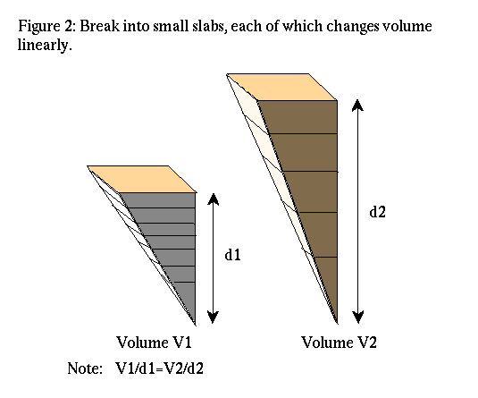
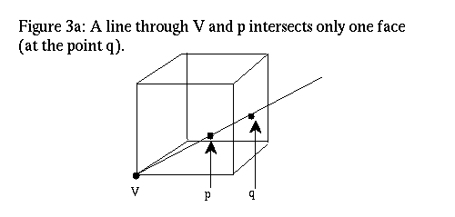
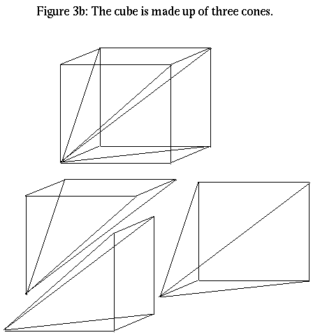
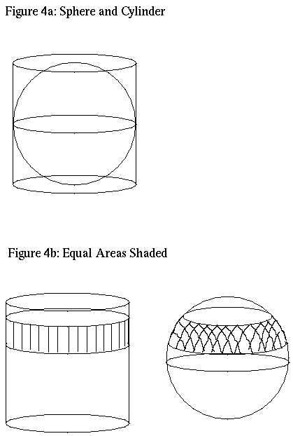

{kind=link}
![[HOME]](ndvolumes_files/home.gif) The Geometry Center Home Page
The Geometry Center Home Page
Article: 90 of geometry.college Xref: news1.cis.umn.edu geometry.pre-college:146 geometry.college:90 Newsgroups: geometry.pre-college,geometry.college From: sander@geom.umn.edu (Evelyn Sander) Subject: Volumes in nD Using Basic High School Geometry Organization: University of Minnesota, Twin Cities Date: Wed, 25 Aug 1993 20:17:37 GMT Lines: 108
This is a description of a geometric means to calculate the volume of a n-ball inscribed in a n dimensional hypercube. In two dimensions we know that the disk inscribed in the unit square has radius 1/2 and therefore area pi*(1/2)^2=pi/4. In three dimensions, the ball inscribed in the unit cube again has radius 1/2, where sqrt means take the square root. Thus the volume of this ball is 4/3*pi*(1/2)^3=pi/6. Paul Burchard, a postdoc at the Geometry Center, showed me how to extend these results to n dimensions (denoted R^n) without using more than basic high school geometry and a few pictures. The extension turns out to be a recursive relation based on the two and three dimensional results: the n-ball inscribed in the unit hypercube has volume equal to pi/(2*n) times the volume of the (n-2)-ball. Perhaps this gives a good way to introduce a high school geometry course to higher dimensional spaces. In the course of reading the article, please look at the associated figures.
By describing the ball as a cone over an object and using some general properties of volumes of cones, I will be able to find the volume of the ball. Here is a relationship between spheres and solid balls using cones: By definition, a cone over an object (not intersecting the origin) consists of all the lines connecting that object to the origin. A closed n-ball is the boundary and interior of an (n-1)-sphere. More precisely, the sphere S(n-1)={x in R^n:|x|=1}, and the ball B(n)={x in R^n:|x|<=1}={t*x:x in S(n-1), t in [0,1]}. Thus the n-ball is actually a cone over the (n-1)-sphere. Thus to find the volume of the ball (Vol(n)), we need an equation for the volume of a cone over a sphere. Note that in fact Vol(n) is the volume of the ball of radius one, when really we wanted the volume of a ball of radius 1/2. This means we need to divide by 2^n at the end of the calculation.
We can think of the cone over the (n-1)-sphere as a union of cones over infinitesimal n-1 dimensional cubes. Note that the volume of a cone over a flat object only depends on the distance from the plane of the object to the origin.

The volume varies linearly with the distance from the object to the origin, since only varying one dimension makes the volume change linearly. As an analogy, think of the cube.

The n dimensional cube consists of exactly n identical cones over n-1 dimensional cubes. To see this, note that a vertex V of a cube intersects exactly n faces and has n faces disjoint from it. Almost every point of the cube is in exactly one cone between a disjoint face and V, the cube consists of the union of cones from each of the n disjoint faces to V


Given an arbitrary point P in the cube, draw a ray from V through P. A point on this line intersects a disjoint face. This face is unique for all but a set of zero volume. Here is a slightly technical proof: Assume that we are discussing the unit cube. If we make V the origin, and all the other vertices vectors consisting of 0's and 1's, then the cube is contained entirely in the first quadrant. The faces intersecting V are the coordinate (n-1)-planes. Exclude points in these coordinate planes; also exclude points on rays from V to the (n-2) edges (these are the intersections of adjacent faces). Both these are sets of zero volume. Any remaining point P in the cube is in the first quadrant; therefore a ray through the origin must intersect one of the faces of the cube disjoint from V. The choice is unique by avoiding edges.
The volume of the cube of height h is h^n, and the cube consists of n equal cones over a (n-1) dimensional face, which is really just an (n-1)-cube. Thus volume of a height h cone over an (n-1)-cube of side length h is (h^n)/n. Thus by the linearity, the volume of the cone of height one over an (n-1)-cube of side length h is (h^n)/(n*h)=1/n*volume of the (n-1) cube. Since we think of the sphere as made up of infinitessimal (n-1)-cubes, the volume of the cone over the unit sphere=Vol(n)=(1/n)*surface area of the sphere=A(n-1)/n.
All that is left is to calculate the area of the sphere in n dimensions=A(n-1). First consider the 3D case for the sphere of radius one. Since the surface area of the region from phi1 to phi2 in spherical coordinates is 2*pi*(cos(phi1)-cos(phi2)), which is also equal to the surface area of the portion of the cylinder of radius one which surrounds this region.

For a more elementary proof involving similar triangles, see Figure 5. Now we only need the surface area of the cylinder. Thus A(2)=2*pi*2. In nD, the generalization of the statement is true. Using n dimensional spherical coordinates, the same pair of similar triangles show that the (n-1)-sphere has the same area as the cross product of the circle with the (n-2)-ball. That is, A(n-1)=2*pi*Vol(n-2).
So finally, since Vol(n)=1/n*A(n-1), we have Vol(n)=2*pi/n*Vol(n-2). All these results were for radius one spheres and balls. To get the volume of the inscribed ball in a unit cube VI(n), just divide by 2^n. In other words, VI(n)=pi/(2*n)*VI(n-2). This was a result quoted in the beginning of the article.
The Geometry Center Home Page
Comments to:
webmaster@www.geom.uiuc.edu
Created: May 15 1994 ---
Last modified: Jun 18 1996